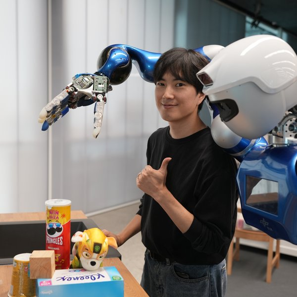
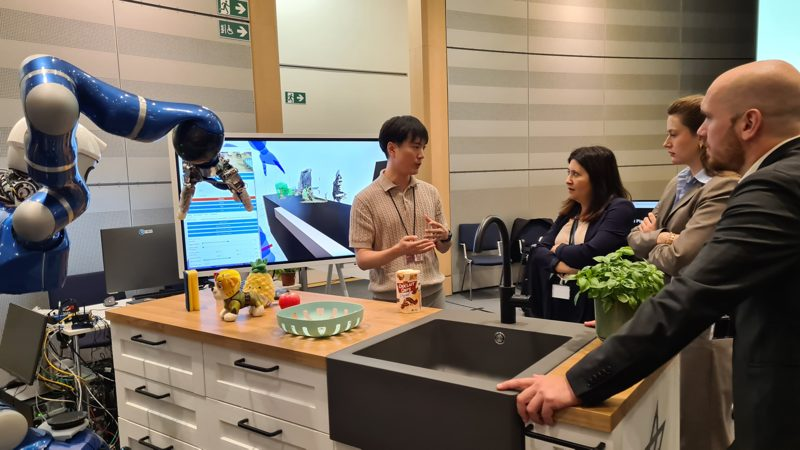

Spatially Conditioned Diffusion Policy: Learning Precise and Robust Manipulation with a Single RGB Camera
CoRL 2026
Developed a spatially conditioned diffusion policy (SCDP) for precise and robust manipulation from a single global RGB view.
Ph.D. candidate, KAIST EE
On the job market starting Spring 2027. Feel free to reach out!

I am a Ph.D. candidate at KAIST EE, advised by Prof. Min Jun Kim in the Intelligent Robotic Systems Lab. I work on generative models for robot manipulation, such as robot policies and grasp generation models. In particular, I am interested in efficient architectures for scene-conditioned diffusion models, and in steerable manipulation pipelines where a generative module can be guided by the needs of downstream tasks. I have also been a visiting researcher at the German Aerospace Center (DLR) Institute of Robotics and Mechatronics, working with Dr. Jinoh Lee on multi-fingered grasping for the humanoid robot Rollin' Justin.
I received my bachelor's and master's degrees in Mechanical Engineering from Sogang University, where I was advised by Prof. Kyoungchul Kong. After that, I worked at Samsung Electronics, developing advanced control and inference algorithms for smart home appliances.
CoRL 2026
Developed a spatially conditioned diffusion policy (SCDP) for precise and robust manipulation from a single global RGB view.
Under review at T-RO
This work proposes a diffusion-based grasp synthesis framework that captures scene-level multi-fingered grasp distributions while supporting inference-time selectivity. Grasp diffusion is performed on the grasp manifold, and each update is conditioned on local geometry queried through hand-surface points.
arXiv, 2024
This work formulates grasp detection problem as a 3D scene-to-pose-set matching problem and solves it with an SE(3)-diffusion model. By predicting scores from local geometry around sampled poses, it efficiently generates task-relevant poses directly from raw scenes.
ICRA 2023
This work introduces a reachability-tree algorithm for task and motion planning. To better coordinate the interaction between task and motion planners, it proposes a hierarchical sampling strategy that first generates an abstract task plan using Monte Carlo tree search (MCTS) and then fills in the details with a geometrically feasible motion trajectory. The resulting motion-planning outcome is fed back as a reward to update the task tree.

euROBIN project · September 2026
Conducted an interactive demo with the humanoid robot Rollin' Justin. Its steerable multi-fingered grasping capability allowed users to specify target objects and grasp types at inference time.
February–June 2025
Developed a closed-loop pipeline of vision (tire segmentation), planning (RL-based next placement prediction), and execution (MPPI-based robot execution) for automating tire packing with an industrial robot arm.